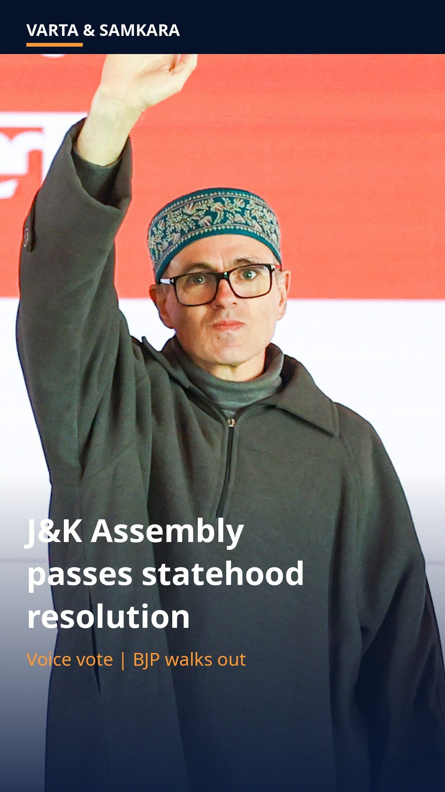
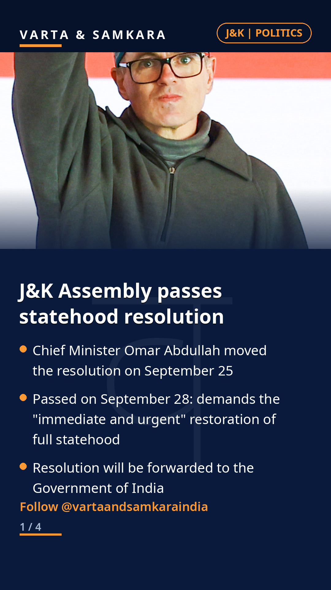
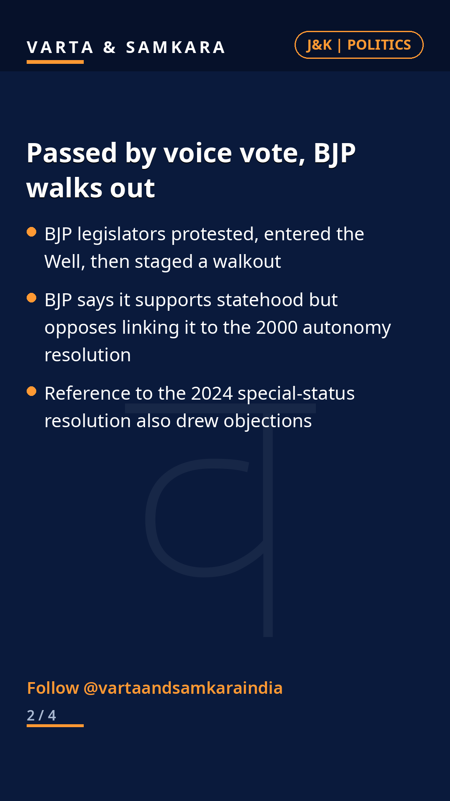
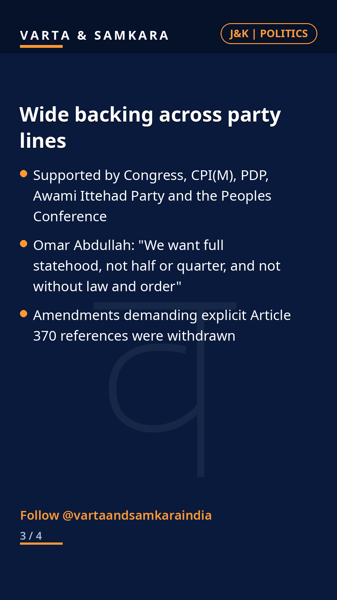
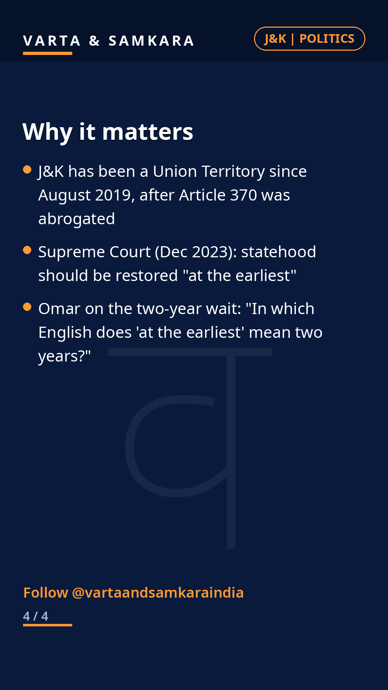

J&K Assembly demands full statehood, now. Passed by voice vote, BJP walked out.

The Jammu and Kashmir Legislative Assembly on Monday passed a resolution moved by Chief Minister Omar Abdullah on September 25, calling on the Government of India for the immediate and urgent restoration of full statehood.
It was passed by voice vote after BJP legislators staged a walkout. The BJP says it supports statehood but opposes the resolution's references to the 2000 autonomy and 2024 special-status resolutions.
Congress, CPI(M), PDP, the Awami Ittehad Party and the Peoples Conference backed the move. Abdullah said he wants full statehood, not half or quarter, and not without law and order.
The long road back
Context matters here. J&K became a Union Territory in August 2019 after Article 370 was abrogated. The Supreme Court in December 2023 said statehood should be restored at the earliest.
The resolution is the Assembly's strongest collective demand yet. The ball is now in New Delhi's court, and the timing and terms of any restoration remain the central unanswered questions.
In pictures




Source: The Hindu, Deccan Herald
Visuals: Photo: Prime Minister's Office, Government of India, GODL-India via Wikimedia Commons
Visuals: Photo: Prime Minister's Office, Government of India, GODL-India via Wikimedia Commons (verified genuine Omar Abdullah photo, downloaded locally); reel music: original synthesized music-box bed
PoliticsIndia#India#News#CurrentAffairs#BreakingNews#JammuAndKashmir#Statehood#OmarAbdullah#KashmirNews#IndianPolitics#Article370#Kashmir#Jammu
See the original reel / carousel with motion graphics on Instagram.
View on Instagram